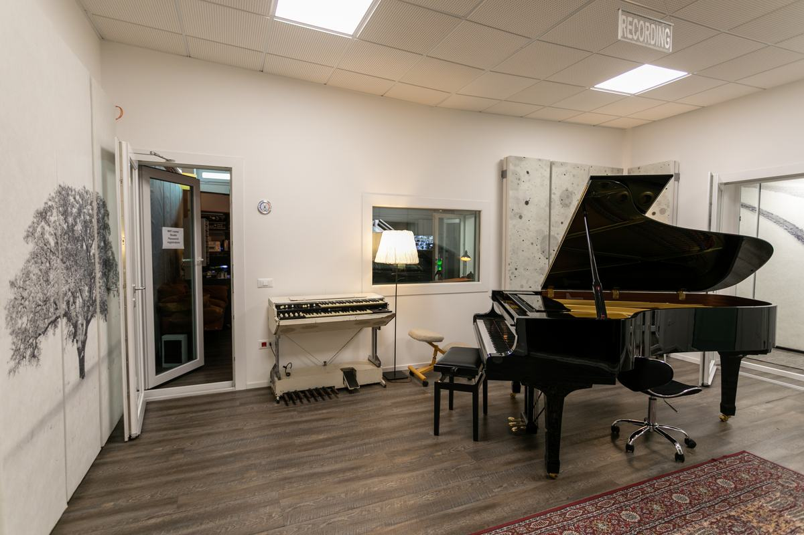
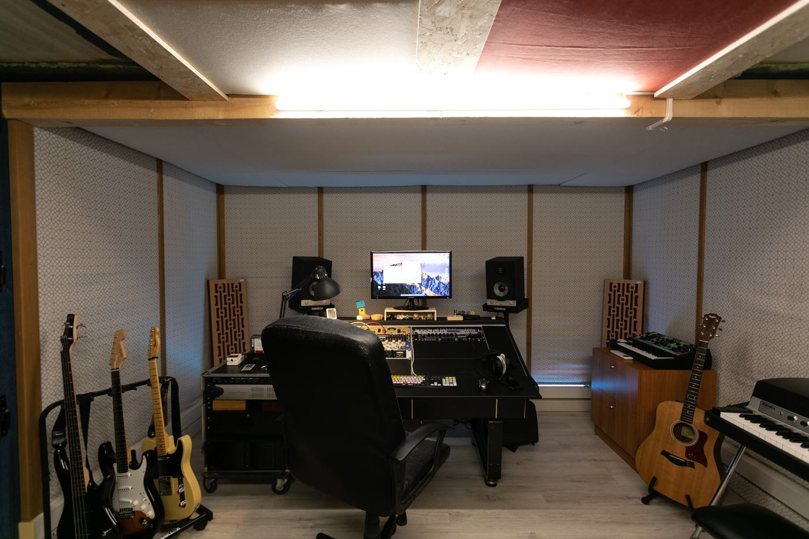

The Studio
Rooms, booths, microphones and systems: the spaces and the tools behind every session.
Rooms, booths, microphones and systems: the spaces and the tools behind every session.

Divides into two distinct spaces and, with four booths for voices and instruments, captures large ensembles live. Wide glass keeps players in eye contact while staying acoustically isolated.

Beyond the drum floor, the tracking room houses a grand piano and a Hammond organ, in eye contact with the rest of the band through the glass.

Built around a 40-channel analogue console and a Pro Tools HD system, for tracking, mixing and mastering.

Fully equipped with vocal PA, drums and amps, with its own independent entrance for maximum flexibility.

A second production room inside the same complex, a few steps from the main studio — extra space for recording and production.
Four booths for voices and instruments, next to the live room. Wide glass keeps players in eye contact while staying acoustically isolated.
Full technical sheet available on request.
Request the technical sheet →Pick your days and tell us about your project.